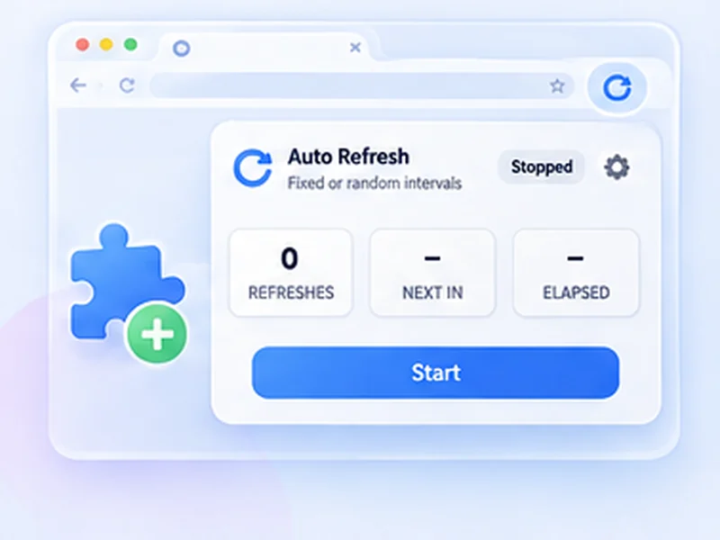

The free auto refresh Chrome extension.
Chrome has no built-in way to reload a tab on a schedule. This extension adds it, along with page watching and alerts, for free.

How chrome extension works
Chrome has no built-in way to reload a tab on a schedule. This extension adds it, along with page watching and alerts, for free.
Chrome blocks every extension on chrome:// pages, the Chrome Web Store and the built-in PDF viewer. Everything else is fine.
Quick setup
Open the Chrome Web Store listing and click Add to Chrome.
Pin the extension from the puzzle-piece menu.
Open any page, click the icon, choose an interval and press Start.
Auto refresh Chrome on a timer
Chrome cannot reload a tab on a schedule by itself. This auto refresh Chrome extension adds that: choose an interval, press Start, and the page reloads until you stop it. It also works as a tab reloader in Edge, Brave, Opera and other Chromium browsers.
What you get, free
- Auto refresh timer with presets and custom seconds
- Random intervals
- Page change monitor with desktop alerts
- Smart pause while you type, click or scroll
- Hard reload, limits, profiles and 7 languages
Small and private
The extension asks for storage, notifications and access to the pages you refresh. It collects no data, shows no ads and makes no network requests. The source code is public on GitHub.
How to auto refresh a page in Chrome, step by step
After installing, click the puzzle-piece icon in Chrome's toolbar and pin Free Auto Refresh. Open the page you want reloaded and click the blue refresh icon. Pick a preset, or type the seconds into Min and Max, and press Start. The icon's badge turns green and counts the refreshes.
To stop, click the icon and press Stop, or press Alt+Shift+R. You can change that shortcut at chrome://extensions/shortcuts.
Auto refresh a Chrome tab without babysitting it
- Tab reloader with a brain. Add a watch rule and it stops when the page changes.
- Free auto refresh, really. No trial, no locked features, no account.
- Works across Chromium. The same listing installs in Edge, Brave, Opera and Vivaldi.
Troubleshooting in Chrome
The icon is greyed out or nothing happens
You are on a chrome:// page, the Web Store or the PDF viewer, where extensions cannot run.
Refreshing stopped by itself
A limit or watch rule ended it, or the extension was updated. Press Start again.
The page reloads but looks the same
Turn on Hard reload to bypass Chrome's cache.
At a glance
- Free, with nothing locked. Random intervals, page watching and notifications are all included. No paid tier.
- Private. No data collection and no network requests. Everything runs inside Chrome.
- Light permissions. It asks only for storage, notifications and access to the pages you refresh.
Questions, answered.
How do I add auto refresh to Chrome?
Open the Chrome Web Store listing, click Add to Chrome, then pin the icon from the puzzle-piece menu.
Can Chrome auto refresh without an extension?
Not repeatedly. See how to auto refresh a page for the one-off script method.
Does it work on Chromebooks?
Yes, in Chrome on ChromeOS.
Does it work in Edge, Brave and Opera?
Yes. They install extensions from the Chrome Web Store.
Does it work in Chrome on Android or iPhone?
No. Mobile Chrome does not support extensions.
Is it really free?
Yes. It is open source, with no ads, accounts or paid features.
Why does it need access to all sites?
So the timer and counter can run on whichever page you choose. Nothing runs until you press Start.
Install it in ten seconds.
Free for Chrome and Firefox. No account, no ads, no tracking.
Not seeing the feature you need?
Share the browser task you would like to make easier. Your idea helps guide what gets built next.